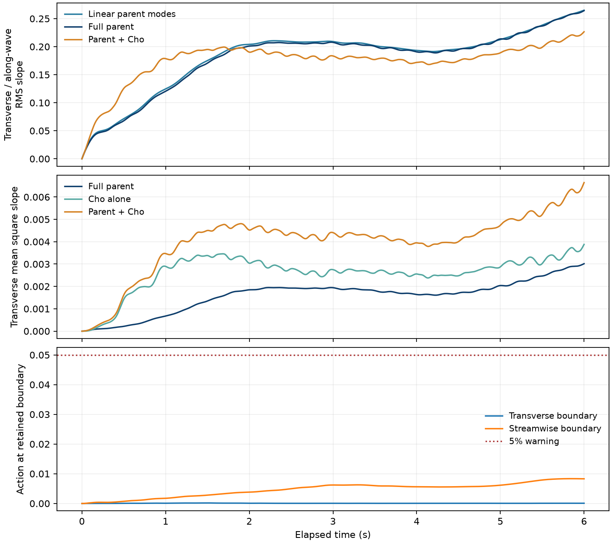

Steep nonlinear waves with Cho roughness
Initially monochromatic 8 cm parent waves at ka = 0.30 interact with an evolving three-dimensional Langmuir current for 6 s. The parent retains 231 free modes, nonlinear gravity-capillary quartet interactions, and reciprocal parent–current feedback. Cho gravity-capillary roughness follows the surface at 2.4× molecular viscosity. This is a new coupled run, distinct from the prescribed-parent steepness controls.
The domain is 32 × 64 cm with 12 cm depth. The current starts from the wind-drift profile at physical age 16 s, with the same seeded Gaussian perturbation as the earlier comparison. The mean-current grid is 33 × 65 × 48; the Cho grid is 512 × 1024, with timestep 0.00025 s. Every retained wave mode participates in the bounded second-order gravity-capillary reconstruction, evaluated on 256 × 512 points. Cho remains passive: it does not feed back on the parent waves or current.
Case and timing
Steepness means the initial carrier amplitude times its wavenumber, ka. Full parent, parent-plus-Cho, and current videos share 0.2× playback speed. The Cho close-up separately shows the final half second at 0.1× speed.
| Case | Initial ka | Physical duration | Parent/current video | Peak transverse action | Peak linear-parent RMS slope y/x | Peak boundary action y / x | Output |
|---|---|---|---|---|---|---|---|
| Steep nonlinear parent: ka = 0.30 | 0.3 | 6 s | 30 s | 0.218 | 0.265 | 0.00017 / 0.0083 | Summary · Parent history · Mean-square slope |
Steep nonlinear parent: ka = 0.30
Left: parent surface. Right: the same surface plus Cho roughness at 2.4× molecular viscosity. This close-up shows physical time 5.5–6 s at 0.1× speed: about 5 seconds of video. The complete Cho and mean-square-slope records cover 0–6 s.
Playback metadata · Parent, Cho and combined mean-square slope
Full parent evolution
All 6 physical seconds play at 0.2× speed, giving about 30 seconds of video. Lighting and vertical proportions are fixed.
Full parent + Cho evolution
The same 0–6 s interval plays at 0.2× speed, about 30 seconds of video. All saved spatial samples enter the surface and lighting calculation, with physical wave heights. Slower playback does not restore motion between saved snapshots.
Full parent/Cho movie metadata
Capillary contribution to slope
Mean-square slopes averaged over physical time 4–6 s. The capillary band begins at |k| = √(g/T). The cross contribution can be negative; the parent, Cho and total MSS are each nonnegative. These late averages do not establish saturation.
| Band | Parent MSS | Cho MSS | Signed cross contribution | Total MSS |
|---|---|---|---|---|
| All wavelengths | 0.046539 | 0.092854 | -0.002679 | 0.13671 |
| Wavelengths ≤ 17.14 mm | 2.3442e-05 | 0.088077 | -0.00038885 | 0.087712 |
Full band-resolved slope history · Band definition and final/late statistics
Underwater current structures
This movie covers the same 0–6 s interval at the same 0.2× speed as the parent movie: about 30 seconds of video. The panels show the wave-averaged Eulerian current, with fixed display scales. The roll cross-section stretches depth for legibility; its axes and vector key retain physical units. Each saved current snapshot is held until the next saved time; the instantaneous wave orbital motion is not included.
Current movie metadata and fixed threshold · Current strength and roll coherence

Interpretation
This run tests stronger curvature while retaining intrinsic nonlinear wave interactions. The capillary-band slope budget separates short-wave roughness from adjustments at the parent wavelength. The parent remains a retained-order model; nonlinear quartet dynamics do not make its second-order surface reconstruction exact at finite steepness. Large mode-boundary action or a large Cho correction signals limits that need further checks. These coarse-current results are not a turbulence-resolution or experimental-onset convergence study.